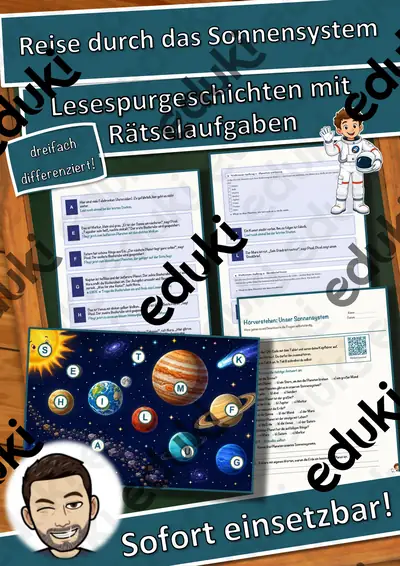

Die Reise in die Steinzeit – Lesespurgeschichte mit Rätselaufgaben (Klasse 5)
Begib dich mit deiner Klasse auf eine spannende Lesespur in die Steinzeit! Die Kinder begleiten eine junge Hauptfigur durch Höhle, Lagerplatz, Jagdgebiet und Feuerstelle und erfahren dabei ganz nebenbei, wie die Menschen in der Steinzeit lebten.
Diese Lesespurgeschichte verbindet motivierendes, sinnentnehmendes Lesen mit echtem Sachwissen zur Frühgeschichte und schult zugleich das genaue Arbeiten. Das Material ist SOFORT EINSETZBAR und in DREI DIFFERENZIERUNGSSTUFEN (leicht ★ / mittel ★★ / schwer ★★★) angelegt, sodass alle Kinder einer Klasse am selben Thema arbeiten können.WICHTIG: Das komplette Material ist sowohl in FARBE als auch in SCHWARZ-WEISS enthalten – ideal zum Sparen von Druckkosten.DAS IST ENTHALTEN
- Lesespurgeschichte in 3 Niveaus (leicht, mittel, schwer)
- farbiger Lageplan als Suchkarte
- Hörverstehen mit QR-Code zur MP3 (Kinder hören selbstständig mit Kopfhörern)
- vier Aufträge auf dem Weg: ein Verbinde-Rätsel, ein Sach-Quiz, eine Rechenaufgabe und ein Steckbrief
- Rätselseite (Wörter-Suchsel + Wissensfragen)
- Ausmalbild zum Thema
- ausführliches Lösungsblatt für die Lehrkraft
- alles zusätzlich als komplette Schwarz-Weiß-VarianteSO FUNKTIONIERT DIE LESESPURDie Kinder lesen ab START, entnehmen dem Text einen Hinweis auf einen Ort, suchen ihn auf dem Plan und lesen beim dort abgebildeten Buchstaben weiter. Eingebaute Sackgassen dienen der Selbstkontrolle. Am Ende werden die gesammelten Buchstaben umgestellt und ergeben ein geheimes Lösungswort. (Die Lösungen sind selbstverständlich nur im Lösungsblatt für die Lehrkraft enthalten.)INHALTLICHER SCHWERPUNKTDas Leben in der Steinzeit: Jäger und Sammler, Werkzeuge und Waffen aus Stein, Knochen und Holz, die Beherrschung des Feuers, Höhlenmalerei und das Leben in der Gruppe.ABGEDECKTER LEHRPLAN (Klasse 5)
- Geschichte / Gesellschaftswissenschaften (GSE, Mittelschule; anschlussfähig an GPG/Geschichte in Realschule und Gymnasium): Frühgeschichte – Leben der Menschen in der Steinzeit, Jäger und Sammler, Werkzeuge und Feuer, Höhlenmalerei.
- Deutsch – Lesen mit Texten und Medien umgehen: Lesestrategien anwenden, Texten gezielt Informationen entnehmen, sinnentnehmend und selektiv lesen, Schlüsselwörter nutzen; Selbstkontrolle und Lesemotivation durch die Lesespur; Zuhören: einem Sachhörtext konzentriert folgen und Wesentliches entnehmen (Hörverstehen mit MP3).
- Mathematik – anwendungsbezogene Sachaufgabe im Kontext des Themas (Grundrechenarten und Größen), Ergebnisse deuten.
- Fächerübergreifend / Kompetenzen: selbstständiges Arbeiten, genaues Lesen und Prüfen, Konzentration und Ausdauer, kreatives Gestalten (Ausmalbild).
Geeignet für Freiarbeit, Stationenlernen, Vertretungsstunden, Wochenplan und Homeschooling. Klassenstufe 5 (differenziert einsetzbar auch in angrenzenden Jahrgangsstufen).
Ähnliche Materialien

Die Reise zu den ersten Bauern – Lesespurgeschichte mit Rätselaufgaben (Klasse 5)

Steinzeit, Urzeit Homeschooling Steinzeit (auch Homeschooling)

Die Reise um die Erde – Lesespurgeschichte mit Rätselaufgaben (Klasse 5)

Benutzer-Lex Braun-Steinzeit Lückentext mit Wortspeicher Hörverstehen und Suchsel

Der Bahnhof – Eine Reise mit der Bahn – Lesespurgeschichte mit Rätselaufgaben (Klasse 5)

Der Nachthimmel – Eine Reise zu den Sternen – Lesespurgeschichte mit Rätselaufgaben (Klasse 5)

Tafelmaterial Steinzeit
